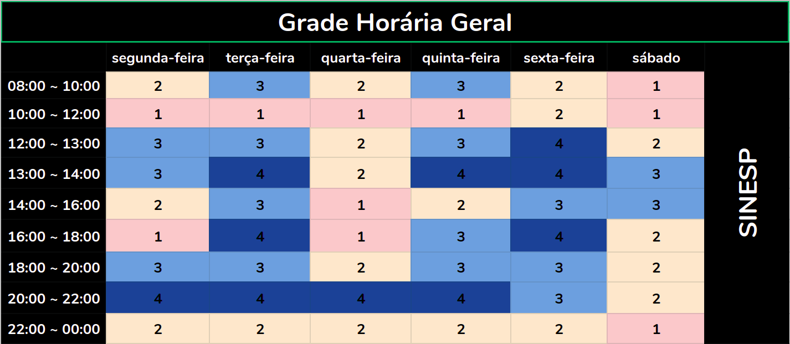

Panejamento
O planejamento é uma ferramenta administrativa que possibilita perceber a realidade, avaliar os caminhos, construir um referencial futuro, o trâmite adequado e reavaliar todo o processo a que o acoplamento se destina.
Introdução
O Planejamento consiste da preparação, organização e estruturação do projeto. É essencial na tomada de decisões e execução dessas mesmas tarefas. Posteriormente, o planejamento também a confirmação se as decisões tomadas foram acertadas. Portanto, o planejamento serve para auxilar o grupo a se organizar nas tarefas que serão propostas durante o projeto, de acordo com as respectivas datas de entrega.
Heatmap

Cronograma
A seguir, estão descritas todas as datas importantes de entrega da equipe moldado no plano de ensino da matéria. Para cada ponto de controle, estão definidas ao menos duas reuniões presenciais, à priori marcadas para acontecer no sábado, mas que podem ser remarcadas caso seja necessário. Além disso, reuniões à distância ocorrerão sob demanda, conforme for necessário para o desenvolvimento do projeto. É importante salientar também que o cronograma está sujeito a mudanças que, caso ocorram, serão rastreadas no versionamento da página.
| Atividade | Data | O que deve ser apresentado |
|---|---|---|
| Ponto de Controle 1 | 07/09 | Apresentar a equipe, App selecionado para o projeto da disciplina, Ferramentas do projeto, cronograma das atividades. |
| Ponto de Controle 2 | 28/09 | Apresentação do projeto: Elicitação – Técnicas e Priorização |
| Ponto de Controle 3 | 09/10 | Entrega da apresentação do projeto: Modelagem de Requisitos: Cenários , Léxico, Use Case, Especificação Suplementar |
| Ponto de Controle 4 | 28/10 | Entrega da apresentação do projeto: Modelagem de Requisitos - Ágil(Histórias de Usuário, Backlogs, NFR Framework) |
| Ponto de Controle 5 | 09/11 | Entrega da apresentação do projeto: Análise de Requisitos: Verificação e Validação |
| Ponto de Controle 6 | 26/11 | Entrega da apresentação do projeto final |
Ferramentas Utilizadas
| Ferramenta | Nome | Descrição |
|---|---|---|
| ZenHub | Subsistema no GitHub que permite gestão ágil do projeto/grupo com interface KanBan | |
| Github | Plataforma que será utilizada para gerir e unificar aquilo que o grupo desenvolver | |
| Google Drive | Plataforma para permitir a edição simultânea de arquivos por todos do grupo | |
| Telegram | Ferramenta de comunicação para avisos gerais, marcar datas de reunião, entre outros |
Requisitos de Software 2020, Sinesp Github. All rights reserved.